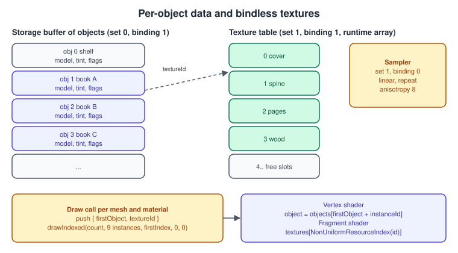
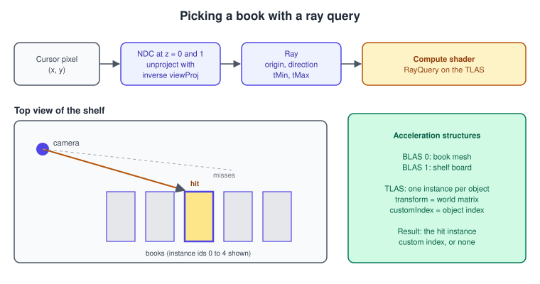
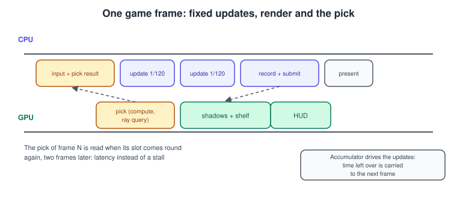

Bookshelf 2: The Scene and the Game
|
This content was generated with the assistance of AI and should be verified against the official documentation before being relied on in production. |
The first page ended with one textured, lit book turning on a board. A scene needs more than that: many objects that share meshes and materials, a way to ask "which one is under the cursor", and a loop that turns the picture into a game. This page builds those three things on the renderer of Bookshelf 1: From a Triangle to the Textured Book: the shelf and nine books from the shared bookshelf.glb, per-object data in a storage buffer with bindless textures, a ray query that picks a book, and the game "catch the falling books" with a score and a timer.
The facts were checked in November 2026. The versions documented are Vulkan 1.4 (headers 1.4.3xx, LunarG SDK 1.4.363.0),
with Vulkan 1.3 as the minimum for the first two sections; descriptor indexing is core since 1.2, so it needs no extension.
Ray query is an extension (VK_KHR_ray_query with VK_KHR_acceleration_structure and VK_KHR_deferred_host_operations)
that most current desktop GPUs and drivers report and many mobile ones do not, so the picking section ends with a CPU
fallback that works on every device. The code continues the C++20 project of the first page: Vulkan-Hpp RAII, VMA, GLFW
and Slang, with GLSL and HLSL alternatives named where the syntax differs. Shaders are compiled with
slangc -target spirv -profile spirv_1_6 -emit-spirv-directly -fvk-use-entrypoint-name -matrix-layout-column-major; Vulkan
1.3 devices accept SPIR-V up to 1.6.
This is Bookshelf steps 6 to 9 and the optional steps of the Vulkan plan: instanced books through bindless indexing,
picking, a tiny game, and the extras (dust in compute, ray-query shadows, a mesh-shader shelf) that link to the topic pages.
The model bookshelf.glb is a glTF 2.0 file with one Shelf node, whose mesh has one primitive per board (six), nine book nodes that share one
book mesh of three primitives, and four materials (Cover, Spine, Pages and Wood), with its textures embedded. The textures are also available as PNG files
in the site’s attachments; KTX2 versions are produced with toktx or ktx create, as shown on the first page, and replace the PNG decode
in the loader without any other change. The same scene exists in the other sub-sections, for example
OpenGL: Instancing and Indirect Drawing,
Metal: GPU-Driven Rendering and
three.js: Interaction, Picking and Controls.
What you will build
The figure is the whole page in one picture. Loading produces three things that the GPU consumes: geometry, a texture table and a list of objects. Everything the frame draws and everything the picking ray can hit comes from that one list, which is why a falling book that the game moves is both drawn and pickable the next frame.
Loading the glTF scene
glTF describes a scene as a tree of nodes. Each node has a local transform (a matrix or translation, rotation and scale) and may point at
a mesh; a mesh is a list of primitives, each with vertex attributes, indices and a material. The loader below uses the
tinygltf library to parse the binary .glb file and flattens the tree: it multiplies the local matrices from the root
down, and records one object per node that has a mesh. The format is specified at the Khronos glTF registry; the
Scene Graphs and Asset Formats page compares it with other formats, and
Meshes and Vertex Data explains the vertex layout used here (the same
32-byte Vertex as on the first page).
#define TINYGLTF_IMPLEMENTATION
#define TINYGLTF_NO_INCLUDE_STB_IMAGE
#define TINYGLTF_NO_STB_IMAGE_WRITE
#include <tiny_gltf.h>
#include <glm/gtc/quaternion.hpp>
#include <functional>
struct Primitive {
uint32_t firstIndex = 0;
uint32_t indexCount = 0;
int32_t vertexOffset = 0;
uint32_t textureSlot = 0; // index into the bindless texture table
};
struct MeshAsset {
std::vector<Primitive> primitives;
uint32_t firstObject = 0; // objects of this mesh are contiguous in the object list
uint32_t objectCount = 0;
};
struct ObjectData { // std430: 80 bytes, mat4 then vec4
glm::mat4 model;
glm::vec4 tint; // rgb multiplier, a unused
// an object that is hidden gets a zero scale in the model matrix
};
struct SceneNodeInfo {
std::string name;
int mesh = -1;
glm::mat4 world{1.0f};
};
struct Scene {
std::vector<Vertex> vertices;
std::vector<uint32_t> indices;
std::vector<MeshAsset> meshes;
std::vector<ObjectData> objects;
std::vector<SceneNodeInfo> nodes; // parallel to the objects, for debugging and names
std::vector<int> objectMesh; // mesh of each object
std::vector<std::vector<uint8_t>> images; // decoded RGBA8 pixels per texture slot
std::vector<glm::ivec2> imageSize;
};
static glm::mat4 localMatrix(const tinygltf::Node& n) {
if (n.matrix.size() == 16) {
glm::mat4 m;
for (int i = 0; i < 16; ++i) m[i / 4][i % 4] = static_cast<float>(n.matrix[i]); // glTF is column-major
return m;
}
glm::mat4 m(1.0f);
if (n.translation.size() == 3) m = glm::translate(m, glm::vec3(n.translation[0], n.translation[1], n.translation[2]));
if (n.rotation.size() == 4) {
m *= glm::mat4_cast(glm::quat(float(n.rotation[3]), float(n.rotation[0]), float(n.rotation[1]), float(n.rotation[2])));
}
if (n.scale.size() == 3) m = glm::scale(m, glm::vec3(n.scale[0], n.scale[1], n.scale[2]));
return m;
}
// Read an accessor as a flat array of floats (components per element given).
static std::vector<float> readFloats(const tinygltf::Model& model, int accessorIndex, int components) {
const auto& acc = model.accessors[accessorIndex];
const auto& view = model.bufferViews[acc.bufferView];
const auto& buf = model.buffers[view.buffer];
size_t stride = view.byteStride ? view.byteStride : components * sizeof(float);
std::vector<float> out(acc.count * components);
for (size_t i = 0; i < acc.count; ++i) {
const float* src = reinterpret_cast<const float*>(&buf.data[view.byteOffset + acc.byteOffset + i * stride]);
for (int c = 0; c < components; ++c) out[i * components + c] = src[c];
}
return out;
}
static std::vector<uint32_t> readIndices(const tinygltf::Model& model, int accessorIndex) {
const auto& acc = model.accessors[accessorIndex];
const auto& view = model.bufferViews[acc.bufferView];
const uint8_t* base = &model.buffers[view.buffer].data[view.byteOffset + acc.byteOffset];
std::vector<uint32_t> out(acc.count);
for (size_t i = 0; i < acc.count; ++i) {
switch (acc.componentType) {
case TINYGLTF_COMPONENT_TYPE_UNSIGNED_SHORT: out[i] = reinterpret_cast<const uint16_t*>(base)[i]; break;
case TINYGLTF_COMPONENT_TYPE_UNSIGNED_INT: out[i] = reinterpret_cast<const uint32_t*>(base)[i]; break;
default: throw std::runtime_error("unsupported index type");
}
}
return out;
}
Scene loadScene(const char* path) {
tinygltf::Model model;
tinygltf::TinyGLTF loader;
std::string err, warn;
if (!loader.LoadBinaryFromFile(&model, &err, &warn, path)) throw std::runtime_error("glTF: " + err);
Scene scene;
// One texture slot per material, in material order, taken from its base colour texture.
std::vector<uint32_t> materialSlot(model.materials.size(), 0);
for (size_t m = 0; m < model.materials.size(); ++m) {
int texIndex = model.materials[m].pbrMetallicRoughness.baseColorTexture.index;
const auto& image = model.images[model.textures[texIndex].source];
materialSlot[m] = static_cast<uint32_t>(scene.images.size());
scene.images.push_back(image.image); // RGBA8 because tinygltf decodes with 4 components
scene.imageSize.push_back({image.width, image.height});
}
// Merge every mesh into one vertex buffer and one index buffer.
scene.meshes.resize(model.meshes.size());
for (size_t mi = 0; mi < model.meshes.size(); ++mi) {
for (const auto& prim : model.meshes[mi].primitives) {
auto pos = readFloats(model, prim.attributes.at("POSITION"), 3);
auto nrm = readFloats(model, prim.attributes.at("NORMAL"), 3);
auto uv = readFloats(model, prim.attributes.at("TEXCOORD_0"), 2);
auto idx = readIndices(model, prim.indices);
Primitive p;
p.vertexOffset = static_cast<int32_t>(scene.vertices.size());
p.firstIndex = static_cast<uint32_t>(scene.indices.size());
p.indexCount = static_cast<uint32_t>(idx.size());
p.textureSlot = materialSlot[prim.material];
for (size_t v = 0; v < pos.size() / 3; ++v) {
scene.vertices.push_back({{pos[3 * v], pos[3 * v + 1], pos[3 * v + 2]},
{nrm[3 * v], nrm[3 * v + 1], nrm[3 * v + 2]}, {uv[2 * v], uv[2 * v + 1]}});
}
scene.indices.insert(scene.indices.end(), idx.begin(), idx.end()); // indices stay relative to vertexOffset
scene.meshes[mi].primitives.push_back(p);
}
}
// Walk the node tree, multiply the matrices and collect (mesh, world) pairs.
struct Item { int mesh; glm::mat4 world; std::string name; };
std::vector<Item> items;
std::function<void(int, const glm::mat4&)> visit = [&](int nodeIndex, const glm::mat4& parent) {
const auto& node = model.nodes[nodeIndex];
glm::mat4 world = parent * localMatrix(node);
if (node.mesh >= 0) items.push_back({node.mesh, world, node.name});
for (int child : node.children) visit(child, world);
};
const auto& sceneDesc = model.scenes[model.defaultScene >= 0 ? model.defaultScene : 0];
for (int root : sceneDesc.nodes) visit(root, glm::mat4(1.0f));
// Group the objects by mesh so that every mesh draws with one contiguous instance range.
std::stable_sort(items.begin(), items.end(), [](const Item& a, const Item& b) { return a.mesh < b.mesh; });
for (const Item& it : items) {
MeshAsset& mesh = scene.meshes[it.mesh];
if (mesh.objectCount == 0) mesh.firstObject = static_cast<uint32_t>(scene.objects.size());
++mesh.objectCount;
scene.objects.push_back({it.world, glm::vec4(1.0f)});
scene.objectMesh.push_back(it.mesh);
scene.nodes.push_back({it.name, it.mesh, it.world});
}
return scene;
}Notes on the loader. The glTF rules that matter are that matrices are column-major (as in GLM), that quaternions are stored
as x, y, z, w (GLM’s constructor takes w first, hence the reordering), that indices are relative to the primitive’s own
vertices (which is why the draw passes vertexOffset and the index values stay unchanged) and that the +Y axis is up with a right-handed
system, the same convention as the projection of the first page. The loader above does not handle sparse accessors,
normalized integer attributes or Draco and meshopt compression; a production loader uses a library that does, such as
fastgltf, or KHR_texture_basisu and KTX2 textures for compact files. Mesh groups of objects that share a mesh are
contiguous, so the nine books become one instance range of nine, and the Shelf node a range of one.
The scene graph and per-object data
A scene graph is a tree because transforms compose: a book’s world matrix is the shelf’s matrix times the book’s local one, so moving the shelf moves every book. The renderer does not need the tree at draw time, only its result, a world matrix per object; the tree is kept on the CPU for the game and for tools.
The flat list lives in a storage buffer, one copy per frame in flight so that the CPU can rewrite the matrices of the
moving objects while the GPU still reads the previous frame. The buffer is host-visible and persistently mapped; at 80 bytes
per object even a few thousand objects are a few hundred kilobytes, and the copy is a memcpy. Large scenes keep a device-local
copy and update only the objects that moved with a compute shader or a transfer; see
Memory Heaps, Types and VMA.

The shader reads the object with the instance index. The vertex stage of the first page has no per-object buffer; the new one replaces the model matrix of the push constants with the lookup:
// shaders/scene.slang
struct Frame {
float4x4 viewProj;
float4 lampPos;
float4 lampColor; // rgb colour, a = power
float4 cameraPos;
float4 ambient; // rgb ambient, a = shininess
};
struct Object {
float4x4 model;
float4 tint;
};
struct Push {
uint firstObject;
uint textureSlot;
};
// set 0: per frame
[[vk::binding(0, 0)]] ConstantBuffer<Frame> frame;
[[vk::binding(1, 0)]] StructuredBuffer<Object> objects;
// set 1: global, never changes while frames run
[[vk::binding(0, 1)]] SamplerState samp;
[[vk::binding(1, 1)]] Texture2D textures[];
[[vk::push_constant]] ConstantBuffer<Push> push;
struct VSIn {
float3 position : POSITION;
float3 normal : NORMAL;
float2 uv : TEXCOORD0;
};
struct VSOut {
float4 clip : SV_Position;
float3 worldPos : TEXCOORD0;
float3 normal : TEXCOORD1;
float2 uv : TEXCOORD2;
float3 tint : TEXCOORD3;
nointerpolation uint textureId : TEXCOORD4;
};
[shader("vertex")]
VSOut vertMain(VSIn v, uint instance : SV_InstanceID) {
Object o = objects[push.firstObject + instance];
VSOut r;
float4 world = mul(o.model, float4(v.position, 1.0));
r.worldPos = world.xyz;
r.normal = mul((float3x3)o.model, v.normal);
r.clip = mul(frame.viewProj, world);
r.uv = v.uv;
r.tint = o.tint.rgb;
r.textureId = push.textureSlot;
return r;
}
[shader("fragment")]
float4 fragMain(VSOut i) : SV_Target {
float3 albedo = textures[NonUniformResourceIndex(i.textureId)].Sample(samp, i.uv).rgb * i.tint;
float3 N = normalize(i.normal);
float3 toLamp = frame.lampPos.xyz - i.worldPos;
float d = length(toLamp);
float3 L = toLamp / d;
float3 V = normalize(frame.cameraPos.xyz - i.worldPos);
float3 H = normalize(L + V);
float diffuse = max(dot(N, L), 0.0);
float specular = diffuse > 0.0 ? pow(max(dot(N, H), 0.0), frame.ambient.w) : 0.0;
float falloff = frame.lampColor.w / (1.0 + d * d);
float3 color = albedo * frame.ambient.rgb
+ (albedo * diffuse + 0.25 * specular) * frame.lampColor.rgb * falloff;
return float4(color, 1.0);
}Source: Slang User Guide and Vulkan Guide: Descriptor Arrays
Two details. The draws below always use a firstInstance of 0 and the push constant carries firstObject, so the instance index in
the shader counts from zero within each draw (in GLSL, gl_InstanceIndex includes the first instance and gl_InstanceIndex - gl_BaseInstance
is the local index; check which one your shading language’s instance semantic maps to before relying on a non-zero firstInstance). And the texture id is a per-instance value that
reaches the fragment shader as a flat varying, so two neighbouring pixels of different instances could use different
textures; that is what NonUniformResourceIndex tells the compiler, and what the feature
shaderSampledImageArrayNonUniformIndexing enables. In this scene all fragments of a draw call use the same slot, so the promise costs little here; leaving the function out when the index really
varies between invocations is undefined behaviour.
Bindless textures with descriptor indexing
A bindless design gives every texture a slot in a large array bound once, and the shader chooses by number. Compared to
binding a descriptor set per material, it removes descriptor updates from the draw loop and allows a draw call to
use any texture. Descriptor indexing is core since Vulkan 1.2; it adds three things used here: a runtime-sized array in the shader,
the PARTIALLY_BOUND flag (slots that no shader reads may stay unwritten) and update-after-bind (descriptors may be written while
a command buffer that uses the set is being recorded or is pending, as long as the written slot is not in use by pending work that reads it). The topic is
developed in Bindless: Descriptor Indexing, Buffer and Heap,
where the newer descriptor buffer and the descriptor heap extension announced with Roadmap 2026 are also covered, and in
Descriptors and Push Constants.
The features are requested in the device creation chain of the first page, extended by these members of the Vulkan 1.2 features struct:
vk::PhysicalDeviceVulkan12Features v12{
.descriptorIndexing = true,
.shaderSampledImageArrayNonUniformIndexing = true,
.descriptorBindingSampledImageUpdateAfterBind = true,
.descriptorBindingPartiallyBound = true,
.descriptorBindingVariableDescriptorCount = true,
.runtimeDescriptorArray = true,
.timelineSemaphore = true,
.bufferDeviceAddress = true}; // buffer device address is used by the acceleration structures belowThe layout puts the sampler and the runtime array in set 1, with the array as the last binding because only the last binding may have a variable size. The per-frame data stays in set 0.
constexpr uint32_t kMaxTextures = 1024; // check maxDescriptorSetUpdateAfterBindSampledImages and the per-stage limit
struct BindlessSet {
vk::raii::DescriptorSetLayout layout{nullptr};
vk::raii::DescriptorPool pool{nullptr};
vk::raii::DescriptorSet set{nullptr};
};
BindlessSet makeBindlessSet(vk::raii::Device& device) {
using Flag = vk::DescriptorBindingFlagBits;
std::array bindings{
vk::DescriptorSetLayoutBinding{0, vk::DescriptorType::eSampler, 1, vk::ShaderStageFlagBits::eFragment},
vk::DescriptorSetLayoutBinding{1, vk::DescriptorType::eSampledImage, kMaxTextures,
vk::ShaderStageFlagBits::eFragment}};
std::array<vk::DescriptorBindingFlags, 2> flags{
vk::DescriptorBindingFlags{},
Flag::ePartiallyBound | Flag::eUpdateAfterBind | Flag::eVariableDescriptorCount};
vk::DescriptorSetLayoutBindingFlagsCreateInfo flagsInfo{.bindingCount = 2, .pBindingFlags = flags.data()};
BindlessSet b;
b.layout = vk::raii::DescriptorSetLayout(device, {
.pNext = &flagsInfo,
.flags = vk::DescriptorSetLayoutCreateFlagBits::eUpdateAfterBindPool,
.bindingCount = 2, .pBindings = bindings.data()});
std::array sizes{vk::DescriptorPoolSize{vk::DescriptorType::eSampler, 1},
vk::DescriptorPoolSize{vk::DescriptorType::eSampledImage, kMaxTextures}};
b.pool = vk::raii::DescriptorPool(device, {
.flags = vk::DescriptorPoolCreateFlagBits::eUpdateAfterBind,
.maxSets = 1, .poolSizeCount = 2, .pPoolSizes = sizes.data()});
uint32_t variableCount = kMaxTextures;
vk::DescriptorSetVariableDescriptorCountAllocateInfo variable{.descriptorSetCount = 1,
.pDescriptorCounts = &variableCount};
vk::DescriptorSetAllocateInfo alloc{.pNext = &variable, .descriptorPool = *b.pool,
.descriptorSetCount = 1, .pSetLayouts = &*b.layout};
b.set = std::move(vk::raii::DescriptorSets(device, alloc).front());
return b;
}
// Register a texture: write its view into the next free slot. Slots are never reused while frames may read them.
void writeTexture(vk::raii::Device& device, BindlessSet& b, uint32_t slot, vk::ImageView view) {
vk::DescriptorImageInfo info{.imageView = view, .imageLayout = vk::ImageLayout::eShaderReadOnlyOptimal};
vk::WriteDescriptorSet write{.dstSet = *b.set, .dstBinding = 1, .dstArrayElement = slot, .descriptorCount = 1,
.descriptorType = vk::DescriptorType::eSampledImage, .pImageInfo = &info};
device.updateDescriptorSets(write, {});
}Source: Vulkan Guide: Descriptor Arrays and VkDescriptorSetLayoutBindingFlagsCreateInfo reference page
The pipeline layout lists the two set layouts (per-frame set first, bindless set second) and a push-constant range of two uint
values (8 bytes) for the vertex and fragment stages. Binding order of the draw loop below matches: set 0 changes every frame,
set 1 is bound once.
| Piece | Purpose | Pitfall |
|---|---|---|
|
Lets the shader declare |
Without it the SPIR-V capability is missing and pipeline creation fails |
|
Slots that no executed shader instruction reads may hold no descriptor |
Reading an unwritten slot is still undefined behaviour; keep a fallback texture in slot 0 and fill unused slots with it if the shader can index them |
|
The set may be updated while in use by command buffers recorded earlier, for slots not accessed by pending work |
The pool and the layout both need their flags, and the per-stage and per-set limits for update-after-bind descriptors are separate from the ordinary limits |
|
The array size is chosen at allocation, up to the layout’s maximum |
It must be the last binding of the set and needs the allocate-info structure shown above |
|
Tells the compiler the index may differ between invocations of a subgroup |
Forgetting it is correct on some GPUs and wrong on others |
The load code of the first page is split in two so that the loader can feed it either a file or the decoded pixels from the glTF file:
decodePng(path) returns the pixels and uploadRgba(gpu, pixels, w, h) runs the staging copy, the mip generation by blits and the
layout transitions of that page’s texture function. Registering the scene’s textures is then one loop.
std::vector<GpuImage> textures;
for (size_t slot = 0; slot < scene.images.size(); ++slot) {
textures.push_back(uploadRgba(gpu, device, physical, scene.images[slot].data(),
scene.imageSize[slot].x, scene.imageSize[slot].y));
writeTexture(device, bindless, static_cast<uint32_t>(slot), *textures.back().view);
}Drawing many objects
With one vertex buffer, one index buffer, the object list and the texture table in place, the frame records one draw per primitive of each mesh, instanced over the objects of that mesh. For the Bookshelf that is nine calls: three for the book mesh (cover, spine and pages) with nine instances each, and six for the shelf mesh, one per board primitive, with one instance each. The comparison with the first page, which drew one object with three calls, is the point: the call count does not grow with the number of books.
void Renderer::drawScene(vk::raii::CommandBuffer& cmd, uint32_t slot) {
cmd.bindPipeline(vk::PipelineBindPoint::eGraphics, *scenePipeline_);
cmd.setViewport(0, vk::Viewport{0, 0, float(swapchain_.extent.width), float(swapchain_.extent.height), 0, 1});
cmd.setScissor(0, vk::Rect2D{{0, 0}, swapchain_.extent});
std::array sets{*frameSets_[slot], *bindless_.set};
cmd.bindDescriptorSets(vk::PipelineBindPoint::eGraphics, *sceneLayout_, 0, sets, {});
cmd.bindVertexBuffers(0, vk::Buffer(sceneVertices_.buffer), vk::DeviceSize(0));
cmd.bindIndexBuffer(vk::Buffer(sceneIndices_.buffer), 0, vk::IndexType::eUint32);
for (const MeshAsset& mesh : scene_.meshes) {
if (mesh.objectCount == 0) continue;
for (const Primitive& p : mesh.primitives) {
struct { uint32_t firstObject, textureSlot; } push{mesh.firstObject, p.textureSlot};
cmd.pushConstants<decltype(push)>(*sceneLayout_,
vk::ShaderStageFlagBits::eVertex | vk::ShaderStageFlagBits::eFragment, 0, push);
cmd.drawIndexed(p.indexCount, mesh.objectCount, p.firstIndex, p.vertexOffset, 0);
}
}
}Source: vkCmdDrawIndexed reference page
Instancing, multi-draw and indirect draws are compared in
Vertex Input and Drawing. If the object list is huge, a compute shader can cull
objects and write VkDrawIndexedIndirectCommand records that vkCmdDrawIndexedIndirectCount (core since 1.2) draws, which
is the GPU-driven path also built with indirect command buffers in
Metal and with glMultiDrawElementsIndirect in
OpenGL.
Picking a book with a ray query
Picking asks which object a screen position shows. The classical GPU answer renders object ids to an offscreen target and reads one pixel; the classical CPU answer tests a ray against every bounding volume. A ray query does the second on the GPU, against the real triangles, with a hardware-accelerated structure, from inside any shader stage including compute. The ray comes from the cursor.

\[ \mathbf{ p }_n = \frac{ M^{-1}\,(x, y, 0, 1)^T }{ w_n },\qquad \mathbf{ p }_f = \frac{ M^{-1}\,(x, y, 1, 1)^T }{ w_f },\qquad \mathbf{ d } = \mathrm{ normalize }(\mathbf{ p }_f - \mathbf{ p }_n) \]
where \( M \) is the view-projection matrix, \( (x, y) \) are the normalised device coordinates of the cursor and each point is divided by the \( w \) of its own transformed vector (\( w_n \) and \( w_f \)). Depth runs from 0 to 1 in Vulkan, so the near plane is \( z = 0 \). The coordinate conventions are in Coordinate Spaces and Transforms.
Acceleration structures
A ray query needs a bottom-level acceleration structure (BLAS) per mesh, which is a bounding volume hierarchy of its triangles built by the driver, and a top-level one (TLAS) with one instance per object, each with a world transform, a custom index and a visibility mask. The BLAS is built once; the TLAS is rebuilt every frame here because the books fall. See Ray Tracing for the concepts, update modes, compaction and the ray-tracing pipeline that the Bookshelf does not use. The extensions and features are requested like the others:
std::array rtExtensions{VK_KHR_ACCELERATION_STRUCTURE_EXTENSION_NAME, VK_KHR_RAY_QUERY_EXTENSION_NAME,
VK_KHR_DEFERRED_HOST_OPERATIONS_EXTENSION_NAME};
vk::PhysicalDeviceAccelerationStructureFeaturesKHR accel{.accelerationStructure = true};
vk::PhysicalDeviceRayQueryFeaturesKHR rayQuery{.rayQuery = true};
// chain: Features2 -> Vulkan12Features (bufferDeviceAddress = true) -> Vulkan13Features -> accel -> rayQuery
// The vertex and index buffers need these usages (plus the VMA flag VMA_ALLOCATOR_CREATE_BUFFER_DEVICE_ADDRESS_BIT):
constexpr VkBufferUsageFlags kGeometryUsage = VK_BUFFER_USAGE_VERTEX_BUFFER_BIT | VK_BUFFER_USAGE_INDEX_BUFFER_BIT |
VK_BUFFER_USAGE_SHADER_DEVICE_ADDRESS_BIT | VK_BUFFER_USAGE_ACCELERATION_STRUCTURE_BUILD_INPUT_READ_ONLY_BIT_KHR;The BLAS build below uses one geometry per primitive of the mesh, with the unified vertex and index buffers and each primitive’s offsets. The
scratch buffer address must be aligned to minAccelerationStructureScratchOffsetAlignment.
struct Accel {
GpuBuffer storage;
vk::raii::AccelerationStructureKHR handle{nullptr};
vk::DeviceAddress address = 0;
};
vk::DeviceAddress addressOf(vk::raii::Device& device, VkBuffer buffer) {
return device.getBufferAddress(vk::BufferDeviceAddressInfo{.buffer = buffer});
}
Accel buildBlas(Gpu& gpu, vk::raii::Device& device, vk::raii::PhysicalDevice& physical,
const Scene& scene, const MeshAsset& mesh, const GpuBuffer& vertices, const GpuBuffer& indices) {
std::vector<vk::AccelerationStructureGeometryKHR> geometries;
std::vector<vk::AccelerationStructureBuildRangeInfoKHR> ranges;
std::vector<uint32_t> counts;
for (const Primitive& p : mesh.primitives) {
vk::AccelerationStructureGeometryTrianglesDataKHR triangles{
.vertexFormat = vk::Format::eR32G32B32Sfloat,
.vertexData = {.deviceAddress = addressOf(device, vertices.buffer)},
.vertexStride = sizeof(Vertex),
.maxVertex = static_cast<uint32_t>(scene.vertices.size() - 1),
.indexType = vk::IndexType::eUint32,
.indexData = {.deviceAddress = addressOf(device, indices.buffer)}};
geometries.push_back({.geometryType = vk::GeometryTypeKHR::eTriangles,
.geometry = {.triangles = triangles}, .flags = vk::GeometryFlagBitsKHR::eOpaque});
ranges.push_back({.primitiveCount = p.indexCount / 3, .primitiveOffset = p.firstIndex * 4u,
.firstVertex = static_cast<uint32_t>(p.vertexOffset), .transformOffset = 0});
counts.push_back(p.indexCount / 3);
}
vk::AccelerationStructureBuildGeometryInfoKHR build{
.type = vk::AccelerationStructureTypeKHR::eBottomLevel,
.flags = vk::BuildAccelerationStructureFlagBitsKHR::ePreferFastTrace,
.mode = vk::BuildAccelerationStructureModeKHR::eBuild,
.geometryCount = static_cast<uint32_t>(geometries.size()), .pGeometries = geometries.data()};
auto sizes = device.getAccelerationStructureBuildSizesKHR(vk::AccelerationStructureBuildTypeKHR::eDevice, build, counts);
Accel a;
a.storage = gpu.createBuffer(sizes.accelerationStructureSize,
VK_BUFFER_USAGE_ACCELERATION_STRUCTURE_STORAGE_BIT_KHR | VK_BUFFER_USAGE_SHADER_DEVICE_ADDRESS_BIT,
false);
a.handle = vk::raii::AccelerationStructureKHR(device, {.buffer = a.storage.buffer, .offset = 0,
.size = sizes.accelerationStructureSize, .type = vk::AccelerationStructureTypeKHR::eBottomLevel});
a.address = device.getAccelerationStructureAddressKHR({.accelerationStructure = *a.handle});
auto props = physical.getProperties2<vk::PhysicalDeviceProperties2, vk::PhysicalDeviceAccelerationStructurePropertiesKHR>();
uint64_t align = props.get<vk::PhysicalDeviceAccelerationStructurePropertiesKHR>().minAccelerationStructureScratchOffsetAlignment;
GpuBuffer scratch = gpu.createBuffer(sizes.buildScratchSize + align,
VK_BUFFER_USAGE_STORAGE_BUFFER_BIT | VK_BUFFER_USAGE_SHADER_DEVICE_ADDRESS_BIT, false);
uint64_t scratchAddress = (addressOf(device, scratch.buffer) + align - 1) & ~(align - 1);
build.dstAccelerationStructure = *a.handle;
build.scratchData = {.deviceAddress = scratchAddress};
const vk::AccelerationStructureBuildRangeInfoKHR* rangePtr = ranges.data();
gpu.oneShot([&](vk::raii::CommandBuffer& cmd) { cmd.buildAccelerationStructuresKHR(build, rangePtr); });
gpu.destroy(scratch);
return a;
}The TLAS is rebuilt in the frame’s command buffer from an instance buffer that the CPU fills from the object list. Hidden objects get mask 0, which makes a ray skip them without removing the instance, and the object index goes in the 24-bit custom index, which the shader reads back as the instance id.
void Renderer::fillInstances(uint32_t slot) {
auto* out = static_cast<VkAccelerationStructureInstanceKHR*>(instanceBuffers_[slot].info.pMappedData);
for (uint32_t i = 0; i < scene_.objects.size(); ++i) {
const ObjectData& o = scene_.objects[i];
VkAccelerationStructureInstanceKHR inst{};
glm::mat4 rows = glm::transpose(o.model); // Vulkan wants a row-major 3x4
std::memcpy(&inst.transform, &rows, sizeof(VkTransformMatrixKHR));
inst.instanceCustomIndex = i;
inst.mask = hidden_[i] ? 0x00 : 0xFF;
inst.instanceShaderBindingTableRecordOffset = 0;
inst.flags = VK_GEOMETRY_INSTANCE_TRIANGLE_FACING_CULL_DISABLE_BIT_KHR;
inst.accelerationStructureReference = blas_[scene_.objectMesh[i]].address;
out[i] = inst;
}
}
void Renderer::recordTlas(vk::raii::CommandBuffer& cmd, uint32_t slot) {
uint32_t count = static_cast<uint32_t>(scene_.objects.size());
vk::AccelerationStructureGeometryInstancesDataKHR instances{
.arrayOfPointers = vk::False, .data = {.deviceAddress = addressOf(device_, instanceBuffers_[slot].buffer)}};
vk::AccelerationStructureGeometryKHR geometry{.geometryType = vk::GeometryTypeKHR::eInstances,
.geometry = {.instances = instances}};
vk::AccelerationStructureBuildGeometryInfoKHR build{
.type = vk::AccelerationStructureTypeKHR::eTopLevel,
.flags = vk::BuildAccelerationStructureFlagBitsKHR::ePreferFastBuild,
.mode = vk::BuildAccelerationStructureModeKHR::eBuild,
.dstAccelerationStructure = *tlas_[slot].handle,
.geometryCount = 1, .pGeometries = &geometry,
.scratchData = {.deviceAddress = tlasScratchAddress_[slot]}};
vk::AccelerationStructureBuildRangeInfoKHR range{.primitiveCount = count};
const vk::AccelerationStructureBuildRangeInfoKHR* rangePtr = ⦥
cmd.buildAccelerationStructuresKHR(build, rangePtr);
// the compute shader reads the structure that was just written
vk::MemoryBarrier2 barrier{
.srcStageMask = vk::PipelineStageFlagBits2::eAccelerationStructureBuildKHR,
.srcAccessMask = vk::AccessFlagBits2::eAccelerationStructureWriteKHR,
.dstStageMask = vk::PipelineStageFlagBits2::eComputeShader,
.dstAccessMask = vk::AccessFlagBits2::eAccelerationStructureReadKHR};
cmd.pipelineBarrier2(vk::DependencyInfo{.memoryBarrierCount = 1, .pMemoryBarriers = &barrier});
}Each frame slot has its own TLAS, its own instance buffer and its own scratch space, for the reason the uniform buffer does: the GPU may still be
working on the previous frame of another slot. The TLAS buffer is created with the top-level type and the size from
vkGetAccelerationStructureBuildSizesKHR, exactly like the BLAS.
The pick shader
The compute shader traces one ray and writes the custom index of the closest hit, or 0xFFFFFFFF for a miss. Only one invocation is needed, so
the dispatch is a single workgroup of one thread; picking a rectangle (a box selection) would use a thread per sample.
// shaders/pick.slang
struct PickParams {
float4x4 invViewProj;
float2 ndc;
float2 padding;
};
[[vk::binding(0, 0)]] RaytracingAccelerationStructure tlas;
[[vk::binding(1, 0)]] RWStructuredBuffer<uint> pickResult;
[[vk::push_constant]] ConstantBuffer<PickParams> pick;
[shader("compute")]
[numthreads(1, 1, 1)]
void pickMain() {
float4 nearH = mul(pick.invViewProj, float4(pick.ndc, 0.0, 1.0));
float4 farH = mul(pick.invViewProj, float4(pick.ndc, 1.0, 1.0));
float3 origin = nearH.xyz / nearH.w;
float3 direction = normalize(farH.xyz / farH.w - origin);
RayDesc ray;
ray.Origin = origin;
ray.Direction = direction;
ray.TMin = 0.001;
ray.TMax = 100.0;
RayQuery<RAY_FLAG_FORCE_OPAQUE> query;
query.TraceRayInline(tlas, RAY_FLAG_NONE, 0xFF, ray);
while (query.Proceed()) { }
pickResult[0] = (query.CommittedStatus() == COMMITTED_TRIANGLE_HIT)
? query.CommittedInstanceID()
: 0xFFFFFFFFu;
}The same query in GLSL uses GL_EXT_ray_query: rayQueryEXT q; rayQueryInitializeEXT(q, tlas, gl_RayFlagsOpaqueEXT, 0xFF, origin, 0.001,
direction, 100.0); while (rayQueryProceedEXT(q)) {} and
rayQueryGetIntersectionInstanceCustomIndexEXT(q, true) for the committed hit.
Source: Vulkan Guide: Ray Tracing and Slang User Guide
Recording the dispatch and reading the result. The result buffer is a small host-visible buffer per slot. The shader writes both outcomes, so no clearing is needed. A barrier makes the shader write visible to the host, and the CPU reads it when the slot comes round again, after its timeline wait. The answer therefore arrives two frames after the click at two frames in flight, which is below 40 ms at 60 frames per second and well below what a player notices for a falling book.

void Renderer::recordPick(vk::raii::CommandBuffer& cmd, uint32_t slot, glm::vec2 cursor, glm::mat4 viewProj) {
struct { glm::mat4 invViewProj; glm::vec2 ndc; glm::vec2 padding; } push;
push.invViewProj = glm::inverse(viewProj);
// glfwGetCursorPos gives window coordinates with +Y down, which is the direction of Vulkan's NDC Y.
push.ndc = {2.0f * (cursor.x + 0.5f) / swapchain_.extent.width - 1.0f,
2.0f * (cursor.y + 0.5f) / swapchain_.extent.height - 1.0f};
push.padding = {};
cmd.bindPipeline(vk::PipelineBindPoint::eCompute, *pickPipeline_);
cmd.bindDescriptorSets(vk::PipelineBindPoint::eCompute, *pickLayout_, 0, *pickSets_[slot], {});
cmd.pushConstants<decltype(push)>(*pickLayout_, vk::ShaderStageFlagBits::eCompute, 0, push);
cmd.dispatch(1, 1, 1);
vk::MemoryBarrier2 toHost{
.srcStageMask = vk::PipelineStageFlagBits2::eComputeShader,
.srcAccessMask = vk::AccessFlagBits2::eShaderStorageWrite,
.dstStageMask = vk::PipelineStageFlagBits2::eHost,
.dstAccessMask = vk::AccessFlagBits2::eHostRead};
cmd.pipelineBarrier2(vk::DependencyInfo{.memoryBarrierCount = 1, .pMemoryBarriers = &toHost});
}
// at the top of drawFrame, right after the timeline wait of the slot:
uint32_t picked = static_cast<const uint32_t*>(pickResults_[slot_].info.pMappedData)[0];
if (pendingClick_[slot_] && picked != 0xFFFFFFFFu) game_.onPick(picked);
pendingClick_[slot_] = false;Source: vkCmdDispatch reference page
The picks of the first frames read memory the GPU has not written yet; the pendingClick_ flag is set only for slots that recorded a pick for a
click, so stale contents are ignored. The compute descriptor set has two bindings, the TLAS (eAccelerationStructureKHR) and the result
storage buffer.
A CPU fallback
Devices without ray query, and unit tests of the game logic, use the same answer from the CPU. The ray is transformed into each object’s local space with the inverse model matrix and tested against the object’s axis-aligned box with the slab method, so the test is exact for boxes and approximate for the real triangles; it is the classical bounding-volume pick. The nearest hit wins.
struct Ray { glm::vec3 origin, direction; };
// Slab test of a ray against the box [lo, hi]; returns the entry distance or a negative value for a miss.
float intersectBox(const Ray& r, glm::vec3 lo, glm::vec3 hi) {
glm::vec3 inv = 1.0f / r.direction;
glm::vec3 t0 = (lo - r.origin) * inv;
glm::vec3 t1 = (hi - r.origin) * inv;
glm::vec3 tmin = glm::min(t0, t1), tmax = glm::max(t0, t1);
float enter = std::max({tmin.x, tmin.y, tmin.z});
float leave = std::min({tmax.x, tmax.y, tmax.z});
return (leave >= std::max(enter, 0.0f)) ? std::max(enter, 0.0f) : -1.0f;
}
Ray cursorRay(glm::vec2 cursor, glm::vec2 viewport, const glm::mat4& viewProj) {
glm::vec2 ndc = 2.0f * (cursor + 0.5f) / viewport - 1.0f;
glm::mat4 inv = glm::inverse(viewProj);
glm::vec4 n = inv * glm::vec4(ndc, 0.0f, 1.0f), f = inv * glm::vec4(ndc, 1.0f, 1.0f);
glm::vec3 origin = glm::vec3(n) / n.w;
return {origin, glm::normalize(glm::vec3(f) / f.w - origin)};
}
// Returns the index of the nearest object whose box the ray enters, or -1.
int pickCpu(const Ray& ray, std::span<const ObjectData> objects, std::span<const glm::vec3> halfExtents,
std::span<const uint8_t> hidden) {
int best = -1;
float bestT = std::numeric_limits<float>::max();
for (size_t i = 0; i < objects.size(); ++i) {
if (hidden[i]) continue;
glm::mat4 inv = glm::inverse(objects[i].model);
Ray local{glm::vec3(inv * glm::vec4(ray.origin, 1.0f)), glm::vec3(inv * glm::vec4(ray.direction, 0.0f))};
float t = intersectBox(local, -halfExtents[i], halfExtents[i]);
if (t >= 0.0f && t < bestT) { bestT = t; best = static_cast<int>(i); }
}
return best;
}The local.direction is not renormalised on purpose: with a scaled object the distances t stay in units of the world ray, so they compare across
objects.
The game: catch the falling books
The game is deliberately tiny so that the rendering stays the subject: books fall from above the shelf, and the player clicks a falling book to catch it before it hits the floor. A caught book scores points and disappears; a missed one costs a point. The round lasts sixty seconds. The loop structure is the one explained in Game Loop and Frame Timing: the simulation advances in fixed steps, the renderer draws once per presented frame, and input is read between the two. Physics, audio and input in general are in Physics, Audio and Input Basics.
The falling books are not new objects: the object list reserves a pool of sixteen extra instances of the book mesh at its end, all hidden at start, and the game moves them. Reserving the pool when the scene is built keeps the instance ranges contiguous, so no draw call or buffer changes while the game runs.
// Insert `count` hidden copies of the book mesh at the end of its instance range and shift the later ranges.
// Returns the index of the first pool object. Call once after loadScene, before any buffer is created.
uint32_t reservePool(Scene& scene, int bookMesh, uint32_t count, std::vector<uint8_t>& hidden) {
MeshAsset& book = scene.meshes[bookMesh];
uint32_t at = book.firstObject + book.objectCount;
ObjectData parked{glm::scale(glm::mat4(1.0f), glm::vec3(0.0f)), glm::vec4(1.0f)};
scene.objects.insert(scene.objects.begin() + at, count, parked);
scene.objectMesh.insert(scene.objectMesh.begin() + at, count, bookMesh);
scene.nodes.insert(scene.nodes.begin() + at, count, SceneNodeInfo{"pool", bookMesh, parked.model});
for (MeshAsset& m : scene.meshes) {
if (&m != &book && m.objectCount > 0 && m.firstObject >= at) m.firstObject += count;
}
book.objectCount += count;
hidden.assign(scene.objects.size(), 0);
std::fill(hidden.begin() + at, hidden.begin() + at + count, uint8_t{1});
return at;
}The game then keeps one Faller per pool entry.
struct Faller {
uint32_t object = 0; // index into the object list
glm::vec3 position{};
float speed = 0.0f; // metres per second
float spin = 0.0f; // radians per second
float angle = 0.0f;
bool active = false;
};
class Game {
public:
enum class State { Menu, Playing, Paused, GameOver };
Game(Scene& scene, std::vector<uint8_t>& hidden, uint32_t poolBase, uint32_t poolSize)
: scene_(scene), hidden_(hidden), rng_(249) {
for (uint32_t i = 0; i < poolSize; ++i) fallers_.push_back({.object = poolBase + i});
}
void start() {
state_ = State::Playing;
score_ = 0;
timeLeft_ = 60.0f;
spawnTimer_ = 0.0f;
for (Faller& f : fallers_) retire(f);
}
// Fixed-step update: called zero or more times per rendered frame.
void update(float dt) {
if (state_ != State::Playing) return;
timeLeft_ -= dt;
if (timeLeft_ <= 0.0f) { timeLeft_ = 0.0f; state_ = State::GameOver; return; }
spawnTimer_ -= dt;
if (spawnTimer_ <= 0.0f) {
spawn();
spawnTimer_ = std::max(0.35f, 1.0f - 0.01f * float(60.0f - timeLeft_)); // faster as the round goes on
}
for (Faller& f : fallers_) {
if (!f.active) continue;
f.position.y -= f.speed * dt;
f.angle += f.spin * dt;
if (f.position.y < 0.0f) { score_ = std::max(0, score_ - 1); retire(f); continue; }
writeModel(f);
}
}
// Called with the object index returned by the pick (the ray query or the CPU fallback).
void onPick(uint32_t object) {
if (state_ != State::Playing) return;
for (Faller& f : fallers_) {
if (f.active && f.object == object) { score_ += 10; retire(f); return; }
}
}
State state() const { return state_; }
int score() const { return score_; }
float timeLeft() const { return timeLeft_; }
private:
void spawn() {
for (Faller& f : fallers_) {
if (f.active) continue;
std::uniform_real_distribution<float> x(-1.2f, 1.2f), z(-0.25f, 0.25f), speed(0.8f, 1.6f), spin(-2.0f, 2.0f);
f.position = {x(rng_), 3.0f, z(rng_)};
f.speed = speed(rng_);
f.spin = spin(rng_);
f.angle = 0.0f;
f.active = true;
hidden_[f.object] = 0;
writeModel(f);
return;
}
}
void retire(Faller& f) {
f.active = false;
hidden_[f.object] = 1;
scene_.objects[f.object].model = glm::scale(glm::mat4(1.0f), glm::vec3(0.0f)); // zero scale: nothing to draw
}
void writeModel(const Faller& f) {
glm::mat4 m = glm::translate(glm::mat4(1.0f), f.position);
scene_.objects[f.object].model = glm::rotate(m, f.angle, glm::vec3(0.0f, 0.0f, 1.0f));
}
Scene& scene_;
std::vector<uint8_t>& hidden_;
std::vector<Faller> fallers_;
std::mt19937 rng_;
State state_ = State::Menu;
int score_ = 0;
float timeLeft_ = 60.0f;
float spawnTimer_ = 0.0f;
};Source: Vulkan Tutorial (Khronos) for the structure of the renderer the game drives; the game rules are the example’s own.
The main loop drives the fixed updates from the elapsed time. It clamps the frame time so that a stall (a window drag, a breakpoint) does not trigger hundreds of catch-up steps, and it collects the input before the updates of the frame:
int main() {
Renderer renderer(/* window, device, scene */);
Game& game = renderer.game();
constexpr double kStep = 1.0 / 120.0;
double previous = glfwGetTime(), accumulator = 0.0, clock = 0.0;
while (!glfwWindowShouldClose(renderer.window())) {
glfwPollEvents();
double now = glfwGetTime();
accumulator += std::min(now - previous, 0.25); // clamp: never simulate more than a quarter second at once
previous = now;
if (renderer.minimized()) { glfwWaitEvents(); continue; }
while (accumulator >= kStep) {
game.update(static_cast<float>(kStep));
accumulator -= kStep;
clock += kStep;
}
renderer.drawFrame(static_cast<float>(clock)); // includes the pick, the HUD and the present
}
renderer.waitIdle();
}The clicks arrive as GLFW callbacks that set pendingClick_ and store the cursor position for the next drawFrame, where recordPick runs
(ray-query path) or pickCpu is called directly (fallback path); the result goes to game.onPick. When the picked index is one of the nine books on the
shelf or the shelf itself, onPick ignores it, which is the rule that makes clicking the shelf harmless.
The score and the timer, drawn with Dear ImGui
The HUD uses Dear ImGui, a widely used immediate-mode GUI library with a Vulkan backend that renders with dynamic rendering. The setup, which depends on the
version of the library you vendor, passes the instance, device, queue, descriptor pool size, image count and the colour format of the swapchain to the
backend, and tells it to use dynamic rendering instead of a render pass; follow the imgui_impl_vulkan.h of the release you use and its example for
dynamic rendering, because the structure fields have moved between releases. Each frame builds the HUD windows and records the draw data inside the same
rendering scope as the scene, after the scene’s draw calls:
void Renderer::drawHud(vk::raii::CommandBuffer& cmd) {
ImGui_ImplVulkan_NewFrame();
ImGui_ImplGlfw_NewFrame();
ImGui::NewFrame();
ImGui::SetNextWindowPos(ImVec2(12, 12));
ImGui::Begin("HUD", nullptr, ImGuiWindowFlags_NoDecoration | ImGuiWindowFlags_AlwaysAutoResize |
ImGuiWindowFlags_NoInputs | ImGuiWindowFlags_NoSavedSettings);
ImGui::Text("Score %d", game_.score());
ImGui::Text("Time %.0f s", game_.timeLeft());
if (game_.state() == Game::State::GameOver) ImGui::Text("Round over. Click to play again.");
if (game_.state() == Game::State::Menu) ImGui::Text("Click to start.");
ImGui::End();
ImGui::Render();
ImGui_ImplVulkan_RenderDrawData(ImGui::GetDrawData(), static_cast<VkCommandBuffer>(*cmd));
}Source: Vulkan Samples (Khronos)
The HUD is drawn after the scene in the same beginRendering and endRendering pair, so it uses the colour attachment the scene wrote. The
NoInputs flag stops the HUD window from taking the clicks that are meant for the game.
Optional steps
The Bookshelf steps that this page does not code are listed with the topic page that explains them, so that each extension of the Bookshelf has a place to start from:
| Extension | What it adds | Where it is explained |
|---|---|---|
Shadows of the lamp |
A depth-only pass from the lamp and a comparison sampler, or ray-query shadows from the fragment shader with the TLAS that picking already builds |
|
PBR materials |
The glTF metallic-roughness materials of the file replace Blinn-Phong |
|
Dust particles |
A compute shader updates a storage buffer of particles that a billboard pass draws; see the sketch below |
|
Mesh-shader shelf |
The shelf drawn by task and mesh shaders in meshlets instead of by the vertex pipeline |
|
Post-processing |
A render target, a full-screen pass and tone mapping |
Transparency, Blending and Post-Processing, Color Spaces, HDR and Tone Mapping |
Roadmap 2026 and 1.4 features |
Push descriptors in place of the per-frame set, dynamic rendering local read for a deferred variant, host image copy for loading |
The dust is a good first compute exercise. The shader moves each particle with a slow drift and wraps it inside the room, and the dispatch is followed by a barrier that hands the buffer to the vertex stage of the particle draw:
// shaders/dust.slang
struct Particle { float3 position; float life; float3 velocity; float size; };
struct DustPush { float deltaTime; float time; uint count; uint padding; };
[[vk::binding(0, 0)]] RWStructuredBuffer<Particle> particles;
[[vk::push_constant]] ConstantBuffer<DustPush> dust;
[shader("compute")]
[numthreads(64, 1, 1)]
void dustMain(uint3 id : SV_DispatchThreadID) {
if (id.x >= dust.count) return;
Particle p = particles[id.x];
float3 swirl = float3(sin(dust.time + p.position.y * 3.0), 0.0, cos(dust.time + p.position.x * 3.0)) * 0.02;
p.position += (p.velocity + swirl) * dust.deltaTime;
if (p.position.y > 3.0) p.position.y = 0.0;
particles[id.x] = p;
}cmd.bindPipeline(vk::PipelineBindPoint::eCompute, *dustPipeline_);
cmd.bindDescriptorSets(vk::PipelineBindPoint::eCompute, *dustLayout_, 0, *dustSet_, {});
cmd.pushConstants<DustPush>(*dustLayout_, vk::ShaderStageFlagBits::eCompute, 0, DustPush{dt, time, kParticles, 0});
cmd.dispatch((kParticles + 63) / 64, 1, 1);
vk::MemoryBarrier2 toVertex{
.srcStageMask = vk::PipelineStageFlagBits2::eComputeShader,
.srcAccessMask = vk::AccessFlagBits2::eShaderStorageWrite,
.dstStageMask = vk::PipelineStageFlagBits2::eVertexShader,
.dstAccessMask = vk::AccessFlagBits2::eShaderStorageRead};
cmd.pipelineBarrier2(vk::DependencyInfo{.memoryBarrierCount = 1, .pMemoryBarriers = &toVertex});The barrier is outside any rendering scope: barriers cannot be recorded between beginRendering and endRendering except in the narrow case that dynamic
rendering local read enables. Place the dust dispatch before the scene’s beginRendering.
Common mistakes at this stage
| Symptom | Likely cause | Where to look |
|---|---|---|
All books at the world origin |
|
The loader’s |
Books use the wrong texture |
|
|
Validation error that the bindless set was updated while in use |
The pool or the layout lacks the update-after-bind flag, or a slot read by an executing command buffer was rewritten |
|
Picking returns the object behind the clicked one |
Ray cast with the wrong depth range, the Y flip left out, or the TLAS built from last frame’s matrices |
|
Picks never hit |
Instance mask 0 for every object, or |
|
Picking works in debug and not in release |
The compute pass reads the TLAS without the build barrier |
|
Falling books jitter |
Positions written once per frame instead of once per fixed step, or an interpolation factor missing |
|
The game speeds up on a fast monitor |
The update uses the frame time and not the fixed step |
The main loop |
Performance notes
-
Draw calls are four, regardless of the number of books. The costs that grow with the scene are the matrices written each frame (a
memcpyof 80 bytes per object), the TLAS build (linear in the instance count and fast on current hardware) and the ray traced per click (one ray; microseconds). -
Rebuilding the TLAS every frame is simple and costs little for a few dozen instances. For thousands of moving instances, build with the allow-update flag and update in place, or rebuild only when something moved; compaction applies to the BLAS, which never changes here.
-
Bindless indexing moves the cost from descriptor updates to the access: a non-uniform index can be slower than a uniform one on some GPUs. Where a draw uses a single texture, a uniform index (a push constant) keeps the fast path.
-
Keep the pick latency in mind. Reading the result right after submit with a fence wait stalls the CPU for a frame. The two-frame delay of this page costs nothing; for a game where aim matters, move the pick to the CPU fallback, which answers in the same frame.
-
Profile with a capture tool before changing anything: see Debugging and Capture Tools and Multithreading and Performance.
Where older guides differ
The Vulkan Programming Guide (VPG) and the Vulkan Cookbook (VCB) were written for Vulkan 1.0. For the topics of this page the differences are:
| Topic | Book coverage (Vulkan 1.0, 2016 and 2017) | Approach in this page |
|---|---|---|
Models and math helpers |
VCB chapter 10 covers textures, models and math helpers |
glTF 2.0 with a node tree flattened to an object list, and GLM |
Many objects and descriptors |
Fixed descriptor sets (VPG chapter 6, VCB chapter 5) |
A storage buffer of objects and a bindless texture table with descriptor indexing (core since 1.2); push descriptors arrived in 1.4 and descriptor heaps with Roadmap 2026 |
Ray tracing and ray queries |
Missing from both books; the extensions arrived after them |
|
Compute and subgroups |
Compute in VPG chapter 6 and VCB chapters 7, 8 and 12; subgroups and the memory model are missing from both |
A compute shader in the frame command buffer with synchronization2 memory barriers |
Lighting, shadows and effects |
VCB chapters 11 and 12 (lighting, shadows, skybox, billboards, terrain, post-processing) |
The topic pages and the extension table above, using dynamic rendering instead of render passes and subpasses |
Pacing and synchronization |
Binary semaphores and fences only (VPG chapter 11, VCB chapter 3) |
A timeline semaphore and a fixed-step simulation that is independent of the presentation rate |
Geometry shaders for billboards |
VPG chapter 9, VCB chapters 7 and 12 |
Instanced quads, compute or mesh shaders; geometry shaders are slow on tile-based GPUs |
Checklist
-
The scene loads without validation errors, and the object count and the instance ranges match the file (6 boards, 9 books and 16 pool entries).
-
The four textures are in the bindless table and a fifth, a fallback, fills the unused slots if the shader can reach them.
-
The per-frame buffers (uniforms, objects, instances, pick result) exist once per frame in flight.
-
The TLAS is built after the object matrices are written and before the pick dispatch, with the barrier of this page.
-
Clicking a falling book scores, clicking the shelf does nothing, and the timer ends the round.
-
The game logic produces the same result with the ray query and with the CPU fallback.
-
The window can be resized, minimized and closed during a round without validation errors.
Where to go next
Go back to the first page for the renderer setup this page builds on, or to the topic pages on the choices made here: synchronization, frames in flight, memory, shaders, memory layout of buffers and the C++ bindings. For the vocabulary, see the glossary; for the C++ language side of the loader and the game classes, C++ containers and iterators and algorithms.
References
-
Vulkan Guide: https://docs.vulkan.org/guide/latest/index.html (descriptor arrays, ray tracing, synchronization examples)
-
Vulkan Tutorial (Khronos): https://docs.vulkan.org/tutorial/latest/00_Introduction.html
-
Vulkan Samples: https://docs.vulkan.org/samples/latest/README.html
-
Vulkan specification and reference pages: https://docs.vulkan.org/spec/latest/index.html and https://registry.khronos.org/vulkan/
-
glTF 2.0 specification: https://registry.khronos.org/glTF/specs/2.0/glTF-2.0.html
-
Slang User Guide: https://shader-slang.org/slang/user-guide/
-
Vulkan Memory Allocator: https://gpuopen.com/vulkan-memory-allocator/
-
KTX-Software (toktx, ktx create): https://github.com/KhronosGroup/KTX-Software
-
LunarG Vulkan SDK documentation: https://vulkan.lunarg.com/doc/sdk
-
Vulkan Programming Guide (InformIT): https://www.informit.com/store/vulkan-programming-guide-the-official-guide-to-learning-9780134464541
-
Vulkan Cookbook (Packt): https://www.packtpub.com/en-us/product/vulkan-cookbook-9781786468154